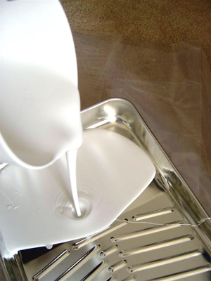
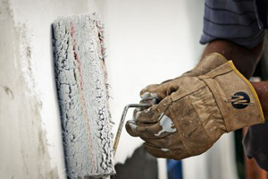
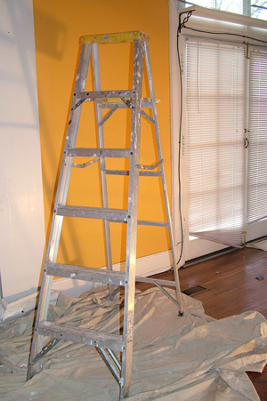

2735 Chesire Lane North, Suite 400
Plymouth MN, 55447
6810 N Broadway Suite A
Denver CO 80221
233 S 13th St Suite 1100
Lincoln, NE 68501
Interior Painting Services
Our customers come first. We will do whatever is necessary to meet your needs and objectives. That's our commitment.
We know how important the appearance of your home or business is.
Call on us for your painting needs.
We understand that each step of the painting process needs to be done expertly to achieve the best looking and longest-lasting results; from the initial estimate, to the prep-work, to the actual painting, and then finally to the walk-through.
A paint job is only as good as the painter doing the work. We do all types of interior painting including apartments, houses, condos, and commercial buildings. Experience and professionalism matters. We take pride in our attention to detail.
Color Selection
Picking the right color will allow you to maximize the beauty and even makes some spaces look larger. Consider your furniture and color themes. Is your lighting natural or artificial? Your purpose and budget can make a difference.
Most houses are not alike, each paint job is unique. We are professional painting contractors that paint interiors and exteriors. We do everything from new construction painting, remodel painting, repaints and custom house painting.
Our Process
- Educate the client on the process
- You will receive a clear estimate before we start
- Full prep of the paint area, including repairing wall imperfections such as nail holes, cracks, etc
- We use top quality products
- We do not skip steps
- We work continuously to keep a clean job site
- We will never increase a project cost
- Walk-through with homeowner to ensure satisfaction
Exterior House Painting
Exterior painting will beautify and protect your home. A simple color change of your home is not the only purpose. In order to get the most out of your paint job it is necessary to spend the time doing the preparation work that will ensure your house is protected and the paint job will last. A good quality paint job should last 7 to 10 years. A better quality paint job should last 10 to 12 years.
At Guarantee Construction Group, we recognize that your home is perhaps your most valuable asset, and you want to beautify and protect it with a great paint job.
Our Estimators will work with you to transform your home based on your taste, your furnishings and your budget. Paint is one of the most cost effective ways to enhance the look of your home and can be accomplished with minimal disruption to your life.
Our painters are skilled professional craftsman who understand the finer points of proper preparation and repair. We use superior products and demand our painters take their time and do the job right the first time. You will be very happy with the results when our painters are finished with your project.
Before we start any exterior painting project, we always protect windows, roofing, brick, sidewalks, and landscaping.
If you are looking for an Exterior Painting contractor in Minnesota then contact us today for your free estimate.
Why choose Guarantee Construction Group for your Exterior Painting:
- Attention to detail
- Knowledgeable about exterior painting techniques
- Takes care to protect your home, windows, landscape, and personal property
- Finish on time and on budget
- Thorough clean up
- Final walk through to make sure satisfaction is guaranteed
Exterior Pre-Paint Check List
The following checklist will assist us in being able to complete our work quickly and cause less disruption to your routine.
Prior to our arrival:
- Cut back all bushes that are touching the house and take down vines which are close to, or connected to the house.
- Remove and store all items from your front or back porch that you would not want to get wet during the washing.
- Make sure all windows are closed prior to our arrival for pressure washing.
- Please make arrangements to contain or remove your pets during the project.
- Please turn off automatic sprinkler systems and alarm systems for the duration of the project.
- Please leave phone numbers where you may be reached during the day.
- Please relax. You have hired professionals who do this every day. We understand the disruption caused by having work done in your home and we will do everything possible to make it as easy for you as we can.
- If you are unable to do any of the items on the checklist, please contact us and we will be happy to make arrangements with you.
- We take pride in our professionalism and craftsmanship. Time is taken to prepare and protect your property as if it were our own and to provide the best possible service to complete your project in an efficient and timely manner.
Our Process of Exterior Painting.
- Power washing cleans the house from all the dirt and dust that has build up, during many years since the last time the exterior has been painted.
- Scrape loose paint by hand.
- If the exterior of the house has paint that is pealing, some of it may come off with pressure washing. However to get rid of all loose paint completely, it needs to be scraped well by hand.
- Fix cracks and holes.
- Lightly sand as needed
- Depending on the size of cracks different materials may be used.
- Tarp and cover all non-painted surfaces
- Mask windows, doors and cover driveways, walks, decks and plants around the house.
- Prime any new or exposed surfaces
- Spray and/or roll and brush one or two coats depending on surface
- Spray the body of the house and inside of the trim. Wait till the paint dries and put second coat of paint.
- We'll clean up the job site daily
- Inspection.
- Do an inspection of the house with the homeowner.